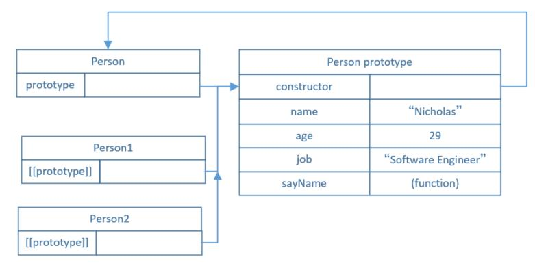

关于JS中面向对象部分，结合《Javascript高级程序设计》中的例子总结一下原型链和继承部分的内容。
在Js当中没有类这个概念，当我们想要创建具有相同属性的对象的时候，有如下解决方法：
其中，原型模式在Js中应用更加广泛，下面逐一对上述模式进行介绍。
工厂模式
在ECMAScript中，所谓的工厂模式其实就用一个函数进行封装，创建对象时传入相应的参数即可:
1 2 3 4 5 6 7 8 9 10 11 12
| function createPerson(name, age, job) { var o = new Object(); o.name = name; o.age = age; o.sayName = function() { alert(this.name); } return o; } var person1 = createPerson("Nick", 20, "Teacher"); var person2 = createPerson("Nancy", 21, "Doctor");
|
工厂模式一目了然，但它的缺点是，我们无法得知我们创建的person1和person2究竟属于什么类型，我们只知道它们都是object, 但我们希望更加具体。因为它们有相同的行为，我们希望person1和person2都属于一个叫Person的“类”。构造函数模式可以满足这个要求。
构造函数模式
直接上代码：
1 2 3 4 5 6 7 8 9 10 11
| function Person(name, age, job) { this.name = name; this.age = age; this.job = job; this.sayName = function() { alert(this.name); } } var person1 = new Person("Nick", 20, "Teacher"); var person2 = new Person("Nancy", 21, "Doctor");
|
下面解释一下对象创建的过程，
- 首先，new新建一个对象
- this指向这个新对象
- 执行Person函数中的代码
- 返回这个新对象
用构造函数创建对象也很方便，但有个缺点，注意上面例子中this.sayName方法，这种创建方式意味着我们每创建一个新的Person实例，该实例内部都会新建一个sayName方法。而实际上，这些方法的作用都相同，没有重复创建的必要。如果把这个函数放在构造函数之外，作为全局函数的话，可以解决重复的问题，但却牺牲了Person的封装性，因此我们推荐下一种模式，原型模式。
原型模式
我们需要一个“仓库”存储同一类型的对象的共有的属性和方法，在js里面，这个“仓库”是prototype指向的对象（即原型对象）。
我们创建的每一个函数都有一个prototype(原型)属性，这个属性指向“仓库”（prototype本身是一个指针）。只要把所需的函数、属性添加到“仓库”中，便可在该类型对象的实例中共用。
1 2 3 4 5 6 7 8 9 10 11 12 13 14 15 16
| function Person() {} Person.prototype.name = 'Nicholas'; Person.prototype.age = 29; Person.prototype.job = 'Software Engineer'; Person.prototype.sayName = function() { alert(this.name); } var person1 = new Person(); person1.sayName(); var person2 = new Person(); peron2.sayName(); alert(person1.sayName() == peron2.sayName());
|
原型对象
原型对象是一个很重要的概念，它就是我们上面提到的“仓库”（可能比喻不是很恰当），先来理解一下它：结合刚才的代码，有下图：

有：
- 构造函数Person的prototype属性指向Person prototype对象；Person Prototype的constructor又指向Person构造函数；
- 实例Person1和Person2的[[prototype]]指针也指向Person prototype对象；
在调用person1.sayName()的时候，解析器会先询问person1中是否有sayName方法，发现没有，就会查找person1的原型；在person1原型中发现有，就会使用原型中的sayName方法。
来看另外一个例子：
1 2 3 4 5 6 7 8 9 10 11 12 13 14 15 16
| function Person() {} Person.prototype.name = 'Nicholas'; Person.prototype.age = 29; Person.prototype.job = 'Software Engineer'; Person.prototype.sayName = function() { alert(this.name); } var person1 = new Person(); var person2 = new Person(); person1.name = "Gerg"; person1.sayName(); person2.sayName();
|
在这里，可以看到设置了person1的name属性后，该属性即存在于person1实例中，无需再从原型中查找，在person1中，相当于将原型的name属性覆盖,而person2不受影响。
语法简化
上面的代码有点冗长，可以用对象字面量来重写原型对象，代码如下：
1 2 3 4 5 6 7 8 9 10 11
| function Person() {} Person.prototype = { constructor : Person, name : "Nicholas", age : 29, job : "software Engineer", sayName : function() { alert(this.name); } }
|
原型的动态性
- 对原型的修改会直接反映到每个实例，因为实例的[[prototype]] 实际上是指向原型对象的指针；
- 如果直接重写原型对象，原来的原型没有被直接覆盖，而是将构造函数的prototype指向新的原型对象。在此之前所建的实例的[[prototype]]不指向重写后的原型对象：
1 2 3 4 5 6 7 8 9 10 11 12 13 14
| function Person() {} var friend = new Person(); Person.prototype = { constructor : Person, name : "Nicholas", age : 29, job : "software Engineer", sayName : function() { alert(this.name); } } friend.sayName();
|
从图中可以看出之前生成的实例的原型并没有改变。
构造函数模式和原型模式结合
我们通过构造函数的方式生成每个实例独自享有的属性和方法，通过原型生成共享的属性和方法：
1 2 3 4 5 6 7 8 9 10 11 12 13 14 15 16 17 18 19 20 21
| function Person(name, age, job) { this.name = name; this.age = age; this.job = job; this.friend = [shelby', 'Court']; } Person.prototype = { constructor : Person, sayName : function() { alert(this.name); } } var person1 = new Person('Nicholas', 29, 'software engineer'); var person2 = new Person('Gerg', 27, 'doctor'); person1.friends.push('Van'); alert(person1.friends); //'shelby, Count, Van' alert(person2.friends); //'shelby, Count' alert(person1.friends === person2.friends); // false
|